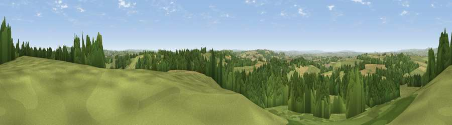

Bratton Hill
#6774 in England · top 8% of its area beats it · near Bratton SeymourThe view, rendered

A 360° render of this exact spot computed from the terrain model, tree cover and land cover — summer colours, afternoon light, calibrated against photographs of famous viewpoints. Real trees, hedges and buildings will differ in detail.
The panorama
Grey silhouette: terrain skyline in each direction (720 bearings, Earth curvature and refraction included). Dashed green: skyline with trees (+15 m) and buildings (+8 m) as obstacles. Blue strip: how far the ground is visible on each bearing.
Where the view opens
Wedge length = distance to the farthest visible ground on that bearing (vegetation-aware). Rings at 10, 25 and 50 km.
What fills the view
47% grassland · 37% woodland · 15% cropland ·
Angular shares of the visible panorama (visual magnitude), not map area. Landscape diversity 0.46 (0–1 Shannon).
Key numbers
More beautiful places nearby
The staircase of upgrades: each row has a higher view potential than everything closer. Driving times are estimates from straight-line distance, calibrated against real road routing — check an actual route before setting out.
| Place | Direction | Drive | Score |
|---|---|---|---|
| Viewpoint near Castle Cary | WNW · 4 km | ~9 min | 69.6 |
| Viewpoint near South Cadbury | SW · 6 km | ~12 min | 74.8 |
| Viewpoint near Lamyatt | N · 6 km | ~13 min | 77.8 |
| Viewpoint near Berwick St John | ESE · 27 km | ~43 min | 78.2 |
| Viewpoint near Hewish | SW · 33 km | ~51 min | 78.5 |
| Beacon Batch | NW · 33 km | ~51 min | 79.4 |
| Lewesdon Hill | SW · 37 km | ~56 min | 83.3 |
| The Knoll | SSW · 44 km | ~64 min | 91.0 |
51.06565, -2.46762 · source: dobih hill · position refined by local search. Computed location — check access rights before visiting.